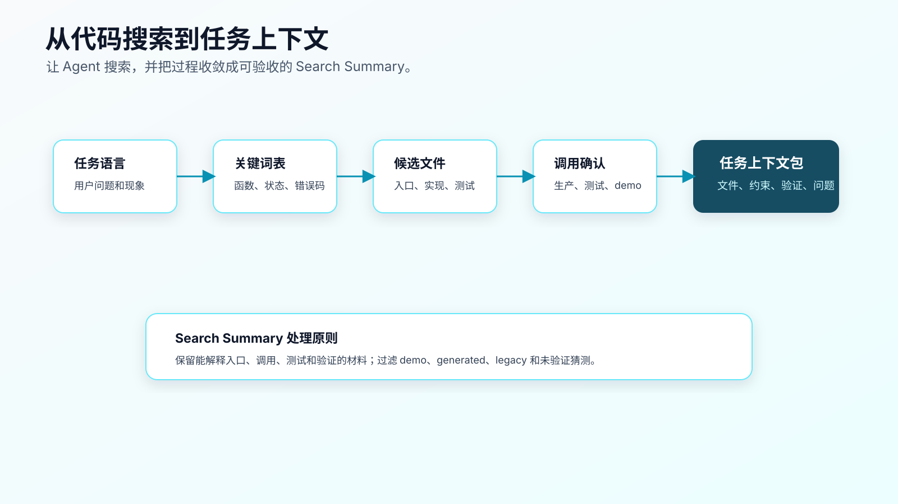
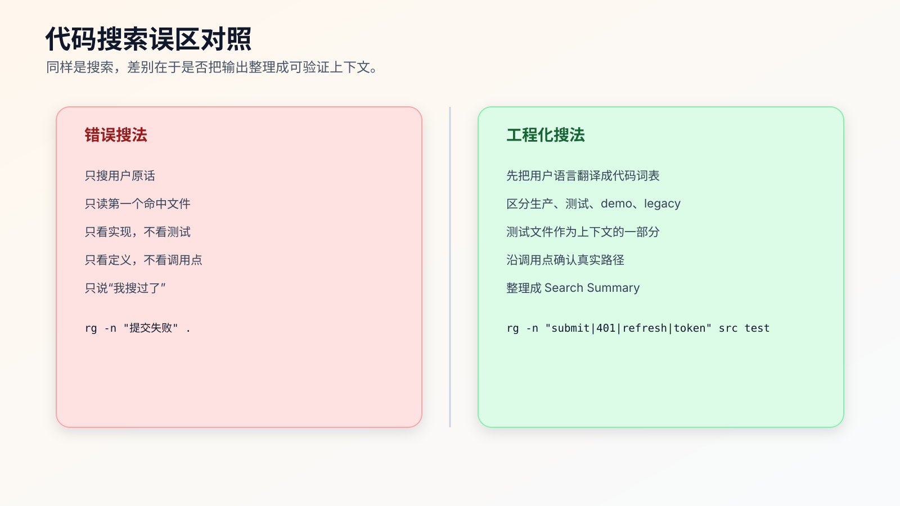

让 Agent 做代码搜索：怎样约束搜索目标、证据和停止条件
AI Coding 里，代码搜索不应该变成程序员手工跑一堆命令，再把输出贴给 AI。
现代 Agent 本来就能读文件、搜索代码、运行命令。程序员真正要做的是约束它怎么搜、搜完交付什么证据、什么时候停止，避免它拿第一个命中结果就开改。
搜索不是为了找到“看起来相关”的文件，而是为了确定 Agent 应该读哪些文件、不要读哪些文件、先改哪里、怎么验证。
很多失败发生在第一轮搜索。
任务是修订单提交失败，Agent 搜到一个 submitOrder 就开始改；任务是修登录状态，Agent 看到一个 401 就加重试；任务是改页面交互，Agent 只读组件不读接口和状态管理。后面即使代码写得不错，方向也可能错了。
程序员要把代码搜索当成上下文选择协议。rg、文件树、调用点、测试文件、配置文件、Git diff 是 Agent 可以使用的工具；你的职责是规定搜索目标、分类方式、证据格式和停止条件。

先明确搜索要回答什么
不要一上来就搜关键词。
先问四个问题：
- 用户可见问题是什么？
- 入口可能在哪里？
- 业务规则可能在哪里？
- 修完怎么验证？
比如任务是：
session 过期后重新登录，第一次提交资料表单失败。
搜索目标不是“找 session”，而是确认：
- 表单提交入口在哪里。
- 401 处理在哪里。
- refresh token 逻辑在哪里。
- submit 是否会重试。
- 是否有相关测试。
- 是否有页面或 API 验证路径。
同样是搜索，目标不同，命令就不同。
第一组动作：先看文件结构
进入陌生仓库后，先让 Agent 看结构。下面这些命令不是要求你每次亲手执行，而是告诉 Agent 这一轮侦察应该覆盖哪些信息；当结果有争议时，你可以用它们复查。
rg --files | sed -n '1,120p'
rg --files | rg "README|AGENTS|CLAUDE|package.json|pom.xml|build.gradle|Makefile|justfile|Taskfile"
rg --files | rg "test|spec|__tests__"
第一条看文件树的样子。第二条找规则、文档和配置。第三条找测试。
注意：rg --files | sed -n '1,120p' 只是快速观察，不是为了把文件全贴给 AI。它帮 Agent 判断项目类型、目录命名、测试位置和生成目录。
如果项目很大，可以缩小范围：
rg --files src | sed -n '1,120p'
rg --files test tests __tests__ 2>/dev/null
看结构时要标记几类目录：
src/ 可能是源码
test/ 测试
docs/ 文档，可能过期
generated/ 生成代码，谨慎修改
dist/ build/ 构建产物，不改
legacy/ 兼容逻辑，不能随便删
examples/ demo/ 示例，不一定是生产路径
这一步的输出应该收敛成代码地图、上下文审计或任务上下文，而不是直接进入实现。
第二组动作：从用户语言到代码语言
用户说的是“提交失败”，代码里可能叫：
submit
save
commit
create
update
mutation
request
checkout
不要只搜一个词。先列同义词。
rg -n "submit|save|create|update|mutation" src test
如果任务是 session 过期，可以搜：
rg -n "session|token|refresh|401|unauthorized|expired" src test
如果任务是订单状态，可以搜：
rg -n "OrderStatus|status|paid|pending|cancel|refund" src test
这里的关键是把用户语言翻译成代码语言。很多 Agent 会漏这一步，直接拿用户原话搜索。中文业务词、页面文案、错误提示未必出现在代码里。
可以让 Agent 先做词表：
先不要搜索。
请把“session 过期后重新登录，第一次提交表单失败”翻译成可能出现在代码里的英文关键词、函数名、状态名和错误码。
然后再给搜索命令。
这个小动作能显著提高命中率。
第三组动作：找入口，而不是找所有匹配
rg 输出很多行时，不要让 Agent 直接进入实现。
先要求它筛入口。
前端任务常见入口：
rg -n "ProfileForm|SettingsPage|routes|createBrowserRouter|submit" src
后端任务常见入口：
rg -n "router|controller|handler|endpoint|POST|GET|/orders" src
CLI 或脚本任务：
rg -n "commander|yargs|process.argv|main\\(|if __name__" .
测试入口：
rg -n "auth-refresh|session|submit" test tests __tests__ 2>/dev/null
入口的判断标准不是文件名像不像，而是它是否连接用户动作和实现逻辑。
例如：
ProfileForm.tsx 可能是页面组件
request.ts 可能是请求封装
auth-refresh.test.ts 可能是验证路径
token-storage.ts 可能是约束文件，不一定要改
这时任务上下文可以写：
## Candidate Entry
- `src/forms/ProfileForm.tsx`: form submit entry.
- `src/auth/request.ts`: HTTP 401 handling.
- `test/auth-refresh.test.ts`: existing auth refresh coverage.
这比“找到很多相关文件”更有用。
第四组动作：沿调用点确认真实路径
找到候选文件后，要确认调用关系。
如果发现函数 refreshToken，继续搜调用点：
rg -n "refreshToken\\(" src test
如果发现类型 OrderStatus：
rg -n "OrderStatus" src test
如果发现错误码：
rg -n "AUTH_EXPIRED|TOKEN_EXPIRED|401" src test
调用点搜索要回答：
- 谁调用它？
- 调用前后有什么状态变化？
- 是否有多条路径？
- 哪些路径有测试？
- 是否有旧接口或兼容层？
一个常见错误是只读函数定义，不读调用点。函数本身看起来可以改，但调用方可能依赖旧行为。
给 Agent 的要求可以这样写：
请不要只读函数定义。
找到候选函数后，继续搜索调用点，并区分：
- 生产调用路径
- 测试调用路径
- demo/example 调用路径
- legacy 调用路径
这能避免它把示例路径当生产路径。
第五组动作：找测试，不要后补
AI Coding 里，测试不是实现后的收尾，它是上下文的一部分。
先搜测试：
rg -n "session|refresh|submit|401" test tests __tests__ 2>/dev/null
rg --files | rg "(test|spec)\\.(js|ts|tsx|java|kt|go|py)$"
读测试时看四件事：
- 当前行为怎么描述。
- 旧边界是什么。
- 测试命令是什么。
- 是否有类似路径可复制。
如果没有测试，也要写清楚：
## Test Coverage
- No existing test found for expired-session first submit.
- Existing auth tests only cover login success and refresh failure.
- Need either a regression test or manual browser verification.
没有测试不是不能改，但不能假装有验证。
第六组动作：查项目命令和规则
很多 AI 失败不是代码错，而是命令跑错。
先找项目命令：
cat package.json
rg -n "\"scripts\"" package.json
rg -n "test|lint|typecheck|build" README.md Makefile justfile Taskfile.yml 2>/dev/null
如果是 Java：
rg --files | rg "pom.xml|build.gradle|gradlew|mvnw"
如果是 Go：
rg --files | rg "go.mod|Makefile"
再读项目规则：
rg --files | rg "AGENTS.md|CLAUDE.md|copilot-instructions|instructions"
项目规则和命令应该进入任务上下文：
## Project Rules And Commands
- Project rules: `AGENTS.md`
- Focused test: `npm test -- auth-refresh`
- Type check: `npm run typecheck`
- Do not edit: `src/generated/`
否则 Agent 很容易用默认命令猜。
搜索结果应该怎样交付
不要让 Agent 把几十行 rg 输出原样丢回来，也不要只接受一句“我搜过了”。
要求它整理成结构化的 Search Summary：
## Search Summary
### Objective
session 过期后重新登录，第一次提交资料表单应该成功。
### Candidate Files
- `src/forms/ProfileForm.tsx`
- reason: form submit entry
- `src/auth/request.ts`
- reason: HTTP 401 handling
- `src/auth/token-storage.ts`
- reason: token storage, do not edit initially
- `test/auth-refresh.test.ts`
- reason: related auth refresh tests
### Not Relevant Initially
- `src/demo/ProfileForm.tsx`
- reason: demo page, not production route
- `src/generated/api-client.ts`
- reason: generated file
### Verification
- `npm test -- auth-refresh`
- browser path: login -> expire session -> refresh -> submit
整理的过程就是上下文选择。
如果 Agent 只返回原始输出，它仍然把优先级判断留给了后续生成；如果它先整理证据，你就能检查它是否把 demo、legacy、generated、tests 和生产路径区分清楚。
Search Summary 怎么验收
Agent 给了 Search Summary，不代表它就能开始改。
你至少要检查六件事。
第一，是否覆盖入口。
对于用户可见问题，必须能找到用户动作进入系统的地方。前端是页面、路由、组件或 submit handler；后端是 route、controller、handler、job 或 consumer；CLI 是命令入口和 argv 解析。只找到工具函数，不算找到入口。
第二，是否覆盖测试。
Agent 如果没有找测试，就很容易把实现写成自己的理解。没有测试也要明说，而不是跳过。
第三，是否区分路径类型。
Search Summary 里至少要区分：
production path
test path
demo/example path
legacy path
generated path
docs-only path
这些路径混在一起，后面一定会出问题。
第四，是否有排除理由。
“Not relevant initially” 不是垃圾桶。每个排除文件都应该有理由。比如 generated、demo、旧文档、测试夹具、历史兼容层、当前任务不允许修改。
第五，是否给出验证入口。
搜索结束时应该知道至少一个验证动作：focused test、接口调用、浏览器路径、日志检查、脚本命令。没有验证入口，就不该实现。
第六，是否列出开放问题。
真实项目里，搜索很少能回答所有问题。Open Questions 不是失败，而是防止 Agent 自己拍板。比如“原请求是否允许重试一次”“并发提交怎么处理”“旧 token 格式是否需要兼容”。
可以用下面这段话验收：
请自检你的 Search Summary：
1. 是否找到真实入口？证据是什么？
2. 是否读取或确认没有相关测试？
3. 是否区分 production/test/demo/legacy/generated？
4. 每个排除文件的理由是什么？
5. 第一个验证动作是什么？
6. 哪些问题必须由人确认？
如果任一项答不上来，不要开始实现。
这段自检不是形式。它能把“搜过了”变成“搜对了没有”。
搜索误区对照

误区一：只搜用户原话。
用户说“提交失败”，代码里可能没有“提交”。要翻译成函数名、状态名、错误码、接口路径。
误区二：只读第一个命中文件。
第一个命中可能是 demo、legacy、docs 或测试夹具。要确认是否生产路径。
误区三：只搜实现，不搜测试。
测试是行为边界。没有测试，就要补测试或手动验证路径。
误区四：只看定义，不看调用点。
定义告诉你函数做什么，调用点告诉你谁依赖它。
误区五：只看当前文件，不看项目规则。
项目规则可能明确禁止改生成目录、禁止新增依赖、要求跑某些命令。
一个完整搜索协议的骨架
不要急着写脚本。先把 Agent 的搜索顺序固定下来。下面这些命令可以作为协议里的可复查证据，也可以在 Agent 输出异常时手动复核。
# 1. worktree
git status --short
# 2. project shape
rg --files | sed -n '1,120p'
rg --files | rg "README|AGENTS|CLAUDE|package.json|Makefile|pom.xml|build.gradle"
# 3. tests
rg --files | rg "test|spec|__tests__"
# 4. task keywords
rg -n "session|token|refresh|401|unauthorized|expired|submit" src test 2>/dev/null
# 5. candidate call sites
rg -n "refreshToken\\(|submitProfile\\(|request\\(" src test 2>/dev/null
# 6. commands
rg -n "test|lint|typecheck|build" package.json README.md Makefile 2>/dev/null
每一组命令后都要让 Agent 回答：这组输出改变了上下文选择吗？
如果没有，就不要把它塞进任务上下文。
让 Agent 搜索时怎么约束
可以直接让 Agent 执行搜索，但要约束输出。
请用 `rg` 做上下文侦察，暂时不要改代码。
要求：
1. 先列关键词，不要直接搜索。
2. 搜索入口、实现、测试、配置。
3. 区分生产路径、测试路径、demo/example、legacy、generated。
4. 输出 Search Summary，不要贴完整原始输出。
5. 如果真实入口不确定，停止并提问。
这个提示比“你先搜一下”强得多。
它让 Agent 明确产出：关键词、分类、候选文件、排除文件、缺失上下文。
什么时候扩大搜索范围
一开始不要全仓乱搜，但也不能死守小范围。
需要扩大范围的信号：
- 候选入口读完后找不到实际调用。
- 测试失败指向另一个模块。
- 日志里出现异步任务或队列。
- 配置决定了运行路径。
- 接口契约在生成客户端或 schema 里。
- 同名函数有多个实现。
扩大搜索时要说清楚原因：
当前 `src/auth/request.ts` 无法解释失败。
错误日志指向 `refresh queue`。
请扩大搜索到 queue 和 retry 相关文件：
`rg -n "refresh queue|retry|pending request" src test`
不要说：
再看看别的地方。
模糊扩大范围最容易产生大 diff。
什么时候停止搜索
搜索也会失控。
有些 Agent 搜着搜着会把整个项目都读一遍，然后产出一份很长的总结。看起来勤奋，实际会增加噪音。
停止搜索的标准不是“再也没有文件可看”，而是已经具备实现前需要的最小证据。
可以用下面五个条件判断：
1. 找到真实入口。
2. 找到核心实现或确认实现缺失。
3. 找到相关测试，或确认没有相关测试。
4. 找到至少一个可执行验证动作。
5. 列出本次不应该修改的相似路径。
满足这五项，就可以停止第一轮搜索，进入计划阶段。
如果继续搜索，必须说明新增搜索要回答什么问题。比如：
继续搜索 only if it answers one of these:
- original request retry policy
- concurrent refresh behavior
- existing regression test location
不要用“再全面看一下”这种要求。它会把 Agent 带回全仓浏览。
搜索停止后，Agent 应该输出一个最小计划，而不是直接改代码：
## Minimal Plan
1. Add a regression test for expired-session first submit.
2. Implement retry-after-refresh in request wrapper only if the test proves the current failure.
3. Run focused auth test and typecheck.
搜索的终点是计划，不是代码。
搜索失败时的处理策略
搜索失败也要有流程。
第一种，关键词不匹配。
比如用户说“提交资料”，代码里叫 saveProfile、mutateProfile、updateUserInfo。这时让 Agent 先做词表扩展，不要猜实现。
当前关键词没有命中真实入口。
请从 UI 文案、route、API path、测试名、类型名五个方向扩展关键词。
第二种，入口在框架约定里。
有些项目入口不明显，比如 Next.js app router、Rails routes、Spring annotations、NestJS decorators、FastAPI route decorators。单纯搜 router 未必够。
要求 Agent 先判断框架，再按框架约定搜：
请先判断项目框架和路由约定。
然后按该框架的入口规则搜索页面、route、handler 或 controller。
第三种，入口在另一个仓库或服务。
如果前端只看到 API 调用，但业务逻辑在后端仓库，不要让 Agent 在当前仓库硬改。
Search Result:
- Current repo contains frontend submit path.
- Backend validation logic is not present.
- Need backend repo, API schema, or documented contract before changing behavior.
第四种，现有测试覆盖缺失。
没有测试时，搜索结果应该明确写：
No existing regression test found.
Next action: add failing test or define manual verification path before implementation.
第五种，搜索结果互相冲突。
比如 README 写 npm test，package scripts 里只有 pnpm test；docs 说 generated/ 不要改，但当前代码里有人手改过 generated 文件。冲突不能靠 Agent 猜。
请列出冲突点、各自证据来源，并停止实现。
搜索失败不是坏事。坏的是失败后还继续实现。
如何处理搜索不到
搜索不到不等于不存在。
可能是：
- 关键词不对。
- 逻辑在配置里。
- 逻辑在生成代码里。
- 行为来自第三方库。
- 文案来自后端。
- 入口在另一个仓库。
这时不要让 Agent 猜。
可以这样问：
当前关键词没有找到入口。
请列出 5 个可能原因，并为每个原因给一个最小验证动作。
不要修改代码。
例如：
## Possible Reasons
1. form submit uses generic `mutate` helper.
- search: `rg -n "mutate\\(" src`
2. 401 handling is in generated API client.
- inspect generated client, but do not edit directly.
3. error text comes from backend.
- search API response schema and backend error code.
搜索不到时，最重要的是调整搜索策略，而不是直接实现。
从搜索到任务上下文包
最终要把搜索结果收敛成任务上下文包。
# Task Context
## Objective
session 过期后重新登录，第一次提交资料表单应该成功。
## Files To Inspect First
- `src/forms/ProfileForm.tsx`: submit entry.
- `src/auth/request.ts`: 401 handling.
- `test/auth-refresh.test.ts`: related tests.
## Files Not To Edit Initially
- `src/auth/token-storage.ts`: token storage format is out of scope.
- `src/generated/api-client.ts`: generated file.
- `src/demo/ProfileForm.tsx`: demo only.
## Verification
- `npm test -- auth-refresh`
- `npm run typecheck`
- browser path: login -> expire session -> refresh -> submit
## Open Questions
- Does refresh success guarantee original request can be safely retried once?
- How should concurrent submit requests behave?
这份上下文包才是进入实现阶段的材料。
搜索本身不是成果。能指导下一步行动、能被人复查的上下文才是成果。
生产里怎么留下搜索证据
搜索证据不一定要永久保存，但中高风险任务应该能在 PR 或任务记录里复查。
最小格式可以是：
## Search Evidence
### Goal
Find expired-session first-submit path.
### Commands / Agent Actions
- searched `session|token|refresh|401|submit` under `src` and `test`
- inspected route, request wrapper, form submit, and auth tests
### Files Read
- `src/forms/ProfileForm.tsx`
- `src/auth/request.ts`
- `test/auth-refresh.test.ts`
### Excluded
- `src/demo/ProfileForm.tsx`: demo only.
- `src/generated/api-client.ts`: generated.
### Verification Candidate
- `npm test -- auth-refresh`
- browser path: login -> expire session -> refresh -> submit
这份记录不需要贴完整 rg 输出。保留完整输出反而会制造噪音。真正要留下的是搜索目标、读过的文件、排除理由和验证候选。
如果团队 review 要求更严格，可以把关键命中行也写进去：
## Key Hits
- `src/auth/request.ts`: contains 401 handling and refresh call.
- `test/auth-refresh.test.ts`: has refresh success test, no original submit retry test.
注意不要写成：
I searched around and found auth files.
这句话没有复查价值。
搜索和代码审查怎么连接
好的搜索会降低 review 成本。
reviewer 最关心的不是你搜了多少，而是你为什么只改这些文件。
PR 里可以这样写：
## Why These Files
- `test/auth-refresh.test.ts`
- adds regression coverage for current failure.
- `src/auth/request.ts`
- only production path that handles 401 refresh and retry.
## Why Not These Files
- `src/auth/token-storage.ts`
- storage was verified to contain refreshed token.
- `src/generated/api-client.ts`
- generated client, inspected only.
- `src/demo/ProfileForm.tsx`
- demo path, not production route.
这比一句“修改了 auth 逻辑”有用得多。
如果 reviewer 问“为什么没改 token storage”，你可以回到证据：Network 显示 token refresh 成功，问题在原请求未重试。这样 review 会围绕事实，而不是围绕感觉。
搜索协议怎么沉淀成规则
如果你发现自己经常提醒 Agent：
- 先找入口再实现。
- 区分 demo 和 production。
- 先找测试。
- 搜索不到就列原因，不要猜。
- 不要把 generated 文件当修改目标。
这些内容就应该写进长期规则或 Skill。
AGENTS.md 里可以放轻量版本：
## Search Before Editing
- For unfamiliar code, search and list actual files read before editing.
- Distinguish production, test, demo/example, legacy, and generated paths.
- Do not edit generated files unless the task explicitly requests generated output changes.
- If no test is found, state the verification gap before implementation.
- If the real entry is unclear, stop and ask.
Skill 里可以放完整流程：关键词生成、搜索、分类、Search Summary、自检、停止条件。
规则越具体，Agent 越不容易把“搜索”理解成随便找几个命中行。
搜索不是代码索引的替代品
这里讲 rg 和 Agent 搜索，不代表所有项目都只靠文本搜索。
大型代码库里，语言服务器、IDE 索引、代码搜索平台、调用图、OpenGrok、Sourcegraph、内部代码平台都很有价值。它们能更准确地找定义、引用、调用关系和跨仓依赖。
但原则不变：工具越强，越要让结果进入 Search Summary。
你可以把搜索动作替换成：
- IDE find references
- language server go to definition
- Sourcegraph query
- internal code search
- dependency graph
但输出仍然要回答：
- 真实入口是什么？
- 关键实现在哪里？
- 哪些路径不能改？
- 测试和验证在哪里？
- 哪些结论还没证据？
不要把代码索引工具的命中结果直接当答案。它只是更强的证据来源。
常见问题
为什么不用 IDE 全局搜索就够了？
IDE 搜索也可以。重点不是工具，而是搜索策略。rg 的好处是快、可复制、容易放进 Agent 工作流和完成记录里。
搜索输出很多，应该给 AI 全部看吗？
不建议。先分类和摘要。完整输出只有在需要复查时再给。大量无关匹配会制造噪音。
Agent 自己会搜索，我还需要关心命令吗？
需要关心搜索目标、分类要求和证据格式。命令可以由 Agent 执行，但 Agent 会搜索不代表它会按正确优先级搜索。
没有测试目录怎么办？
把“没有测试”写进上下文，并补手动验证路径、接口调用或日志检查。不要让 Agent 把没有测试理解成无需验证。
搜索到多个入口怎么办？
让 Agent 区分生产、测试、demo、legacy、generated。无法确认时先提问，不要直接选一个。
迁移建议
下次处理陌生任务时，先不要开改。让 Agent 花 5 分钟做 Search Summary。
固定写这五块：
Objective:
Candidate files:
Not relevant initially:
Verification:
Open questions:
如果这五块写不出来，说明上下文还没选好。
AI Coding 不是让 Agent 替你乱搜。它应该让搜索结果更快变成可执行、可验证、可审查的任务上下文。
接下来会讲项目规则文件：AGENTS.md、CLAUDE.md、Copilot instructions 这类文件到底该写什么，哪些规则适合长期保留，哪些只应该放在单次任务里。
可复查资料
- ripgrep 官方仓库：https://github.com/BurntSushi/ripgrep
- OpenAI Codex 最佳实践：https://developers.openai.com/codex/learn/best-practices
- OpenAI Codex
AGENTS.md指南：https://developers.openai.com/codex/guides/agents-md - Anthropic Claude Code memory：https://code.claude.com/docs/en/memory